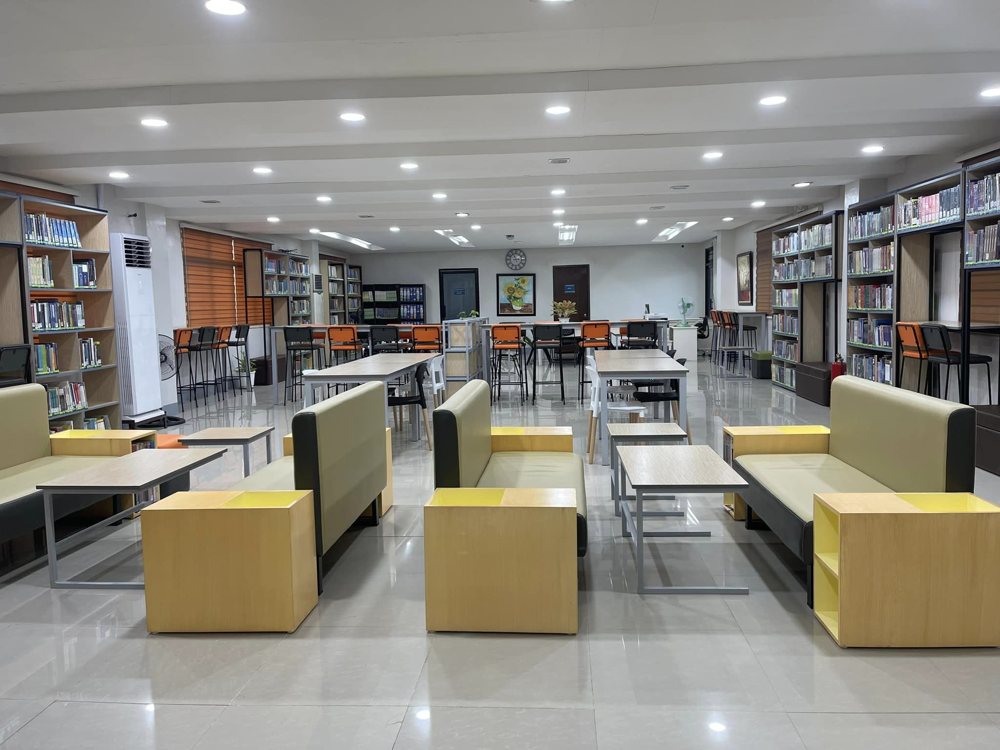

CTU Danao Facility Centrum
The CTU Danao Facility Centrum is a multi-purpose facility that serves as a hub for various university activities and events. It features modern amenities and equipment, making it an ideal venue for conferences, seminars, and other gatherings.
The Facility Centrum is designed to provide a comfortable and convenient space for students, faculty, and guests to hold events, meetings, and other activities. Its state-of-the-art facilities and amenities make it an ideal choice for those looking for a versatile and reliable venue.

CTU Danao Library
The CTU Danao Library is a vital resource center that provides students, faculty, and the community with access to a vast collection of books, journals, and other educational materials. The library envisions itself as a hub for academic excellence, providing excellent service in all fields of specialization to produce globally-competent professionals.
The library's mission is to encourage students, faculty, and the community to use its resources for their professional, spiritual, and personal growth. It also aims to develop the clientele's awareness of the values in their proper use, train its personnel for enhancement of professional skills, and upgrade continuously its collection and facilities.
CTU Danao Oval
The CTU Danao Oval is a state-of-the-art sports facility that hosts various athletic events and competitions. It features a well-maintained track and field, as well as modern amenities to support the needs of athletes and spectators alike.